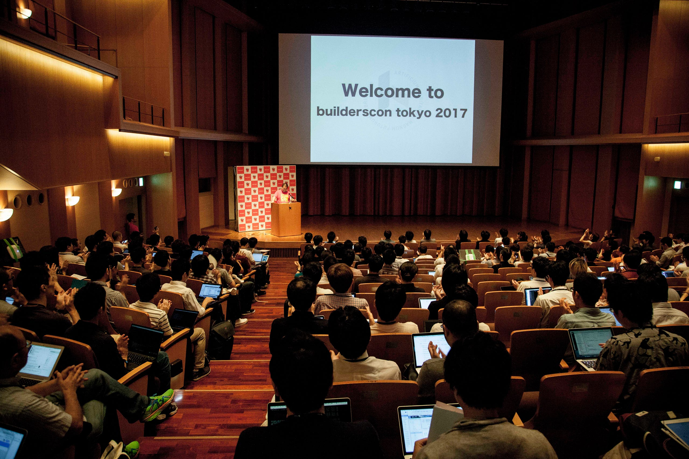
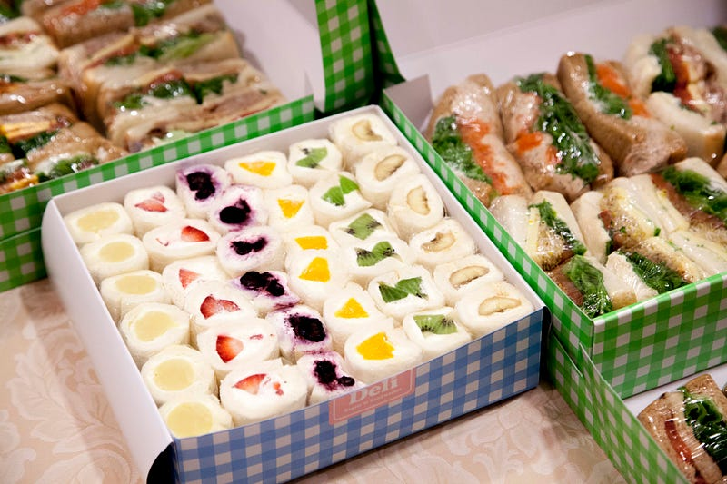
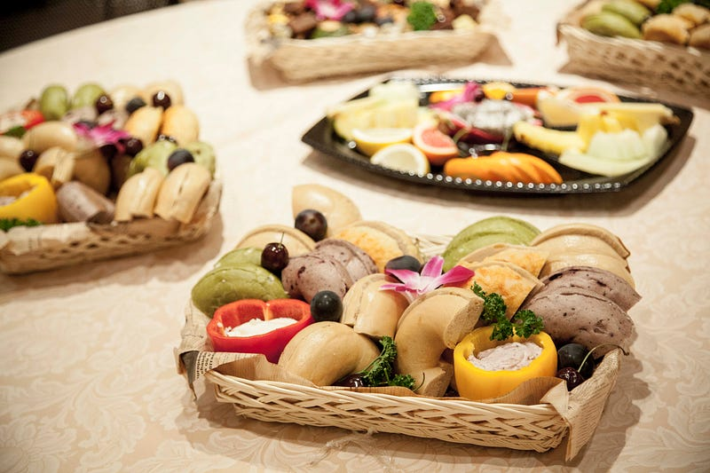
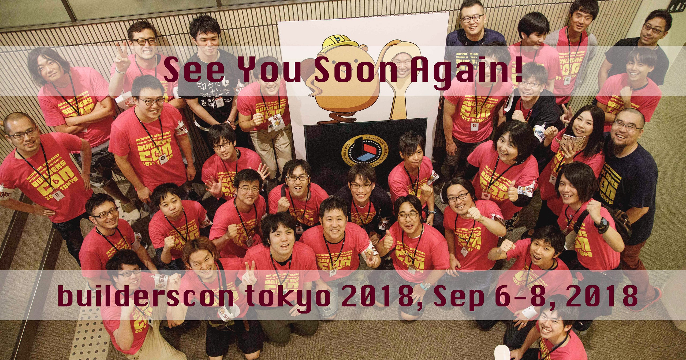

builderscon tokyo 2017
builderscon tokyo 2017!

On August 3, 4, 5, 2017, we successfully hosted builderscon tokyo 2017, in the lovely Kyoseikan building on Keio University.
日本の皆様へtl;dr:
- builderscon tokyo 2017を無事開催しました！
- builderscon tokyo 2018 を 2018年9月6日、7日、8日に慶應義塾大学日吉キャンパス協生館に置いて開催する予定です
- スポンサーに興味がある方はこのフォームよりご連絡先を送信してください。スポンサー募集開始のタイミングで連絡させていただく予定です。
The main purpose of the event is to bring a wide spectrum of engineers together, and promote cross-pollination of ideas and cultures.
While there are many conferences that congregates like-minded people together, we think we want to bring more diverse range of people, so that you can learn from completely different genres, to “Discover Something New”.
I tried to explain our vision for this conference: If you are interested, please check them out.
Sessions
We had a wide variety of talks on Electron, Cybersecurity, 3D Printing, FGPA, Various Language-specific talks (Go, PHP, and others), Mobile devices, etc, etc.
Simultaneous Interpretation Available These proposals have not yet been accepted for this conference. If you would like…builderscon.io
The sessions were all recorded, and they are mostly available on YouTube!
We had guest sessions from Felix Rieseberg and Carly Robbinson from Slack, Suzanne Aldrich from Cloudflare, and Jesse Vincent from keyboard.io.
All sessions were great, but one of my favorite topic was on creating Babbage’s difference engine using 3D printers :)
For Day 0 on Aug 3, we also had a no-sharing-on-social-networks event. The night was on “The Unchosen Technologies”, where people had used/created a particular technology and then had to retreat from using them based on whatever circumstances. Needless to say, secret sessions are enormous fun to listen to.
The Shamoji
This time around, we provided shamoji (rice paddle) to our attendees. I can already hear you say, “To what purpose does a shamoji serve??”
To be perfectly honest, I had the same, if not worse, reaction when I first heard this idea from one of our staff.
So the idea was to make these shamojis each containing a particular tech words and phrases(Writing on shamojis and using as ornaments is a tradition in some part of Japan, so it is not an entirely foreign idea.)
安芸の宮島（厳島、広島県）の名産品でもある（そのため「しゃもじ」そのものを「宮島」と呼ぶこともある）。「必勝」「商売繁盛」などの文字が染め抜かれた飾りしゃもじも工芸品として製作されている。寛政の頃、宮島の光明院の修行僧、誓真が、当時主たる産業がなかった宮島のために、弁天のもつ琵琶と形が似たしゃもじを宮島参拝のみやげとして売り出すことを島民にすすめたことを起こりとする。
百日咳に御利益があるとされる神社には、完治した後にお礼として「しゃもじ」を納める習慣がある場合がある。(from: https://ja.wikipedia.org/wiki/%E3%81%97%E3%82%83%E3%82%82%E3%81%98)
When used in this way, the attendees started looking for other shamojis to complement the phrase on their shamoji, and created more interesting/funny phrases. For example, “Fail”+”Rollback”, “Troubleshooting”+”Monitoring”, etc.
As silly as they were, this allowed the attendees to seek others to talk to, and made for a real nice ice-breaker.
1 Likes, 1 Comments - @builderscon.io on Instagram: "#builderscon あかんて"www.instagram.com
More creative uses included using the shamoji with “Logged In” as a replacement for their conference name cards :)
The Yummy Stuff
We had a range of yummy stuff for our attendees to enjoy, including some nice breakfast, too :) We believe that food is one way to foster more communication between the attendees


Organizer’s Reflections
This is the first conference of this size for builderscon. The previous one, which was a test driver for us, was for for approximately 200 people. This time we gathered around 800.
I must say there were a few issues with our operation this time around (at least, compared to the impeccable record that we created during YAPC::Asia Tokyo 2015). This was partly due to the fact that during the entire preparation phase my wife and I, along with the two sons, were busy doing what parents do when you are expecting your third child. While this was a happy occasion for us, it was definitely not the best timing.
On the bright side, we were able to provide for many new things, which we wanted to do previously, such as breakfast, ice breaking items (the shamoji), and we had an extensible range of talks. And we finally have a session feedback mechanism in place! We will be sending the results to speakers very soon!
Photos & Blogs
We also have photos and blog feedback from the attendees. Unfortunately the blogs are mostly in Japanese, but if you can read them, please enjoy, as they have way more information on how the event went.
Discover Something New - builderscon is a festival for those who love tech!builderscon.io
builderscon tokyo 2018
And finally, we have an announcement to make. We have already booked our venue for builderscon tokyo 2018 (site to be released soon-ish)
It will be in the same Kyoseikan, Keio University. The dates are September 6th, 7th, and 8th. Please book your calendars!
We hope to see you soon in 2018!
